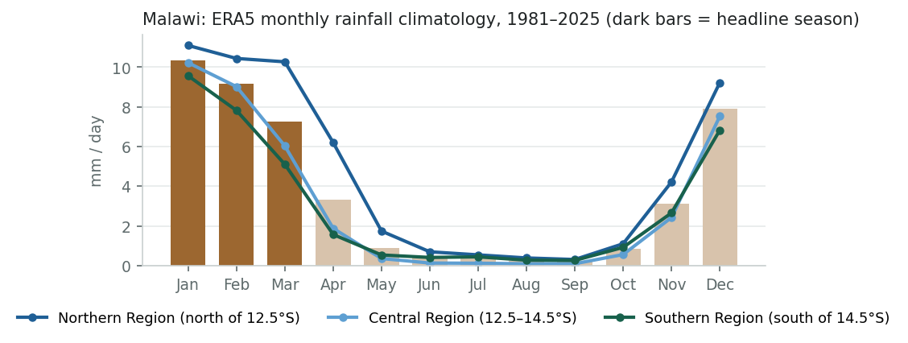
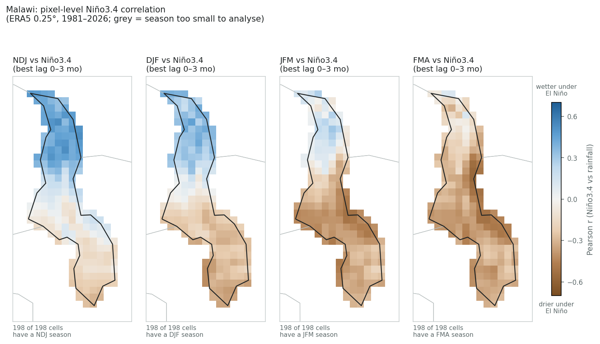
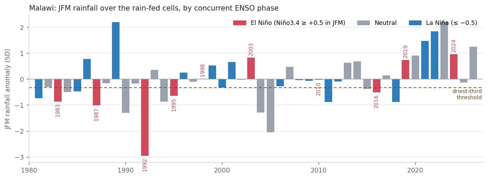
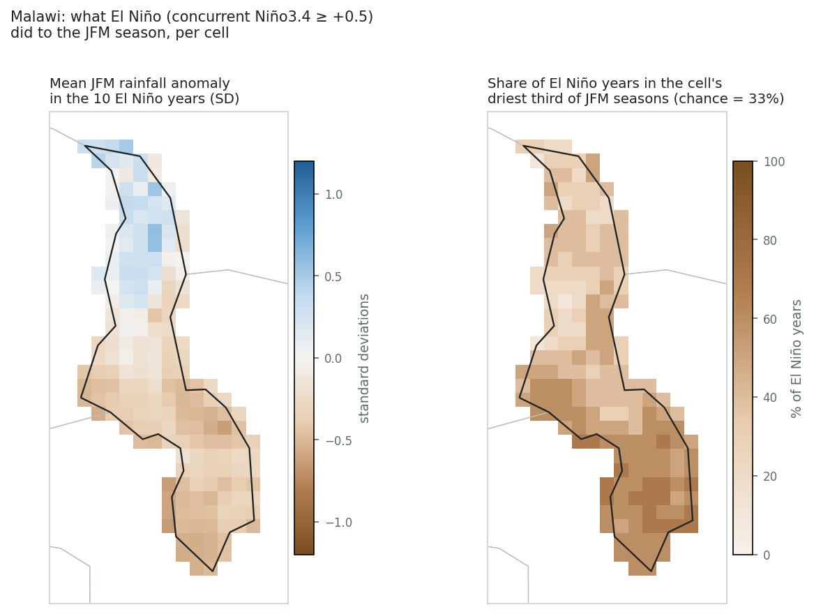
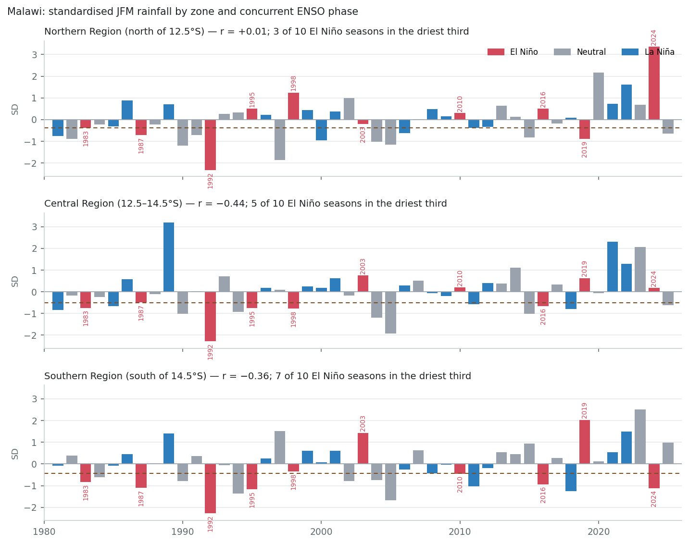
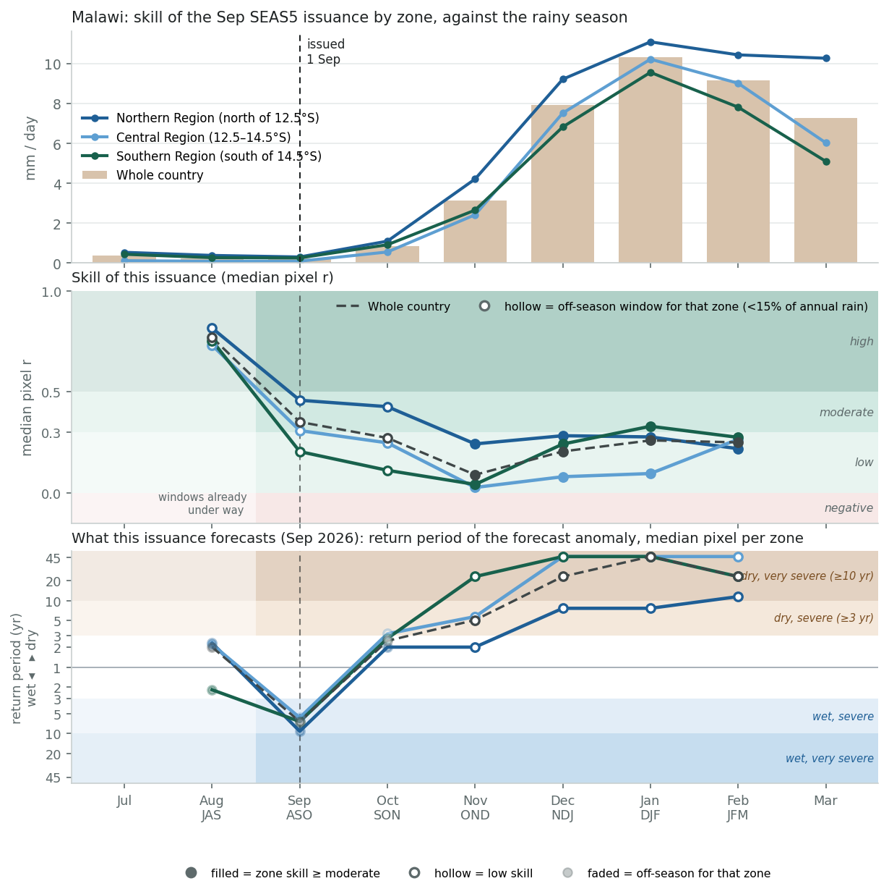

ENSO country deep dive
Survey catalogue says
El Niño → drier, DJF
robust source: Mason & Goddard 2001 (BAMS), from the southern-Africa row (Zimbabwe, Zambia, Malawi, Mozambique, South Africa, Botswana)
This review assesses
El Niño → drier late season in the centre & south; wetter early season in the north, JFM–FMA drier · NDJ wetter (north)
robust Regional literature robust and Malawi-specific studies agree; ERA5 confirms the direction at −0.35 to −0.45 for JFM–FMA in the centre and south. The catalogue's DJF window nets to zero nationally because the north responds with the opposite sign.
Bottom line. The survey catalogue grades Malawi robust for El Niño → drier DJF rains, inheriting the southern-Africa row (Mason & Goddard 2001). The grade is deserved — Malawi is one of the few countries in the block with its own ENSO literature, and ERA5 reproduces the regional signal — but the catalogue's season is wrong and its scale is wrong. Nationally, DJF rainfall is uncorrelated with Niño3.4 (r ≈ 0). The drying arrives late: JFM r ≈ −0.34 and FMA r ≈ −0.43 at country level, −0.44 in the Central Region. And it is confined to the centre and south: north of about 12.5°S Malawi behaves like East Africa, with a wetter early season (NDJ r ≈ +0.5) under El Niño and no late-season drying at all.
For drought. In the south, seven of the ten El Niño JFM seasons since 1981 fell in the driest third (1983, 1987, 1992, 1995, 2010, 2016, 2024), and La Niña seasons almost never did. Nationally the count is five of ten, because the northern half offsets the south: in 2023/24 ERA5 has the Southern Region in its sixth-driest JFM of 45 years while the Northern Region had its wettest on record, and the national mean reads “wet”. 1991/92, the worst drought in the record, was an El Niño year and the driest JFM in every zone.
Recommendation. Keep robust, but move the catalogue season from DJF to JFM–FMA, mark the country seasonally and regionally split (NDJ wetter in the north, JFM–FMA drier in the centre and south), cite the Malawi-specific studies, and read the survey's pixel map rather than its country map for this country.
The literature map was built region by region, and Malawi sits inside the southern-Africa block with Zimbabwe, Zambia, Mozambique, South Africa and Botswana. The block took the grade of the best-replicated finding in African ENSO climatology: austral-summer rainfall over the subcontinent is reduced under El Niño and enhanced under La Niña, sourced to Mason & Goddard's (2001) global probabilistic composite. That finding is not in doubt; it is the basis of every regional seasonal-forecast consensus (SARCOF) since the 1990s.
Two things were inherited along with the grade. The season, “DJF”, was written for the whole block; for the core of the subcontinent the ENSO signal peaks in DJF–JFM, but for Malawi, at the block's northern edge, it peaks later. And the direction was written as a single national response, which for a country that spans 9.5°S to 17°S turns out to be a simplification that matters.
The regional mechanism is solid, and it is a late-summer one. Warm eastern-Pacific SST shifts the Walker circulation, weakens the Angola low and the moisture flux into the subcontinent, and displaces the South Indian Convergence Zone north-eastward over the ocean; the result is subsidence and reduced rainfall over the southern African interior. Reason & Jagadheesha (2005) reproduce this in models for the recent El Niños; Hoell et al. (2015) and Ratnam et al. (2014) show the response depends on El Niño flavour, strongest for canonical eastern-Pacific events. The seasonality has been known since Lindesay (1988) and Nicholson & Kim (1997): the subcontinent's ENSO signal is a January–March phenomenon, weak or of the opposite sign in the early season. The catalogue's DJF is a reasonable compromise for the block but the wrong window for its northern members.
Malawi sits on the hinge between two poles. Nicholson & Kim (1997) describe the African ENSO response as a dipole: eastern equatorial Africa wetter in the short rains, southern Africa drier in late summer, with the nodal zone running through Tanzania and northern Mozambique. Northern Malawi is in that nodal zone. Nicholson, Klotter & Chavula's (2014) Malawi climatology characterises the country as a transition between the East African and southern African rainfall regimes, with a stable mid-November onset, a north that is wetter and later-ending than the south, and an ENSO influence that is real but spatially uneven. ERA5's pattern — a north that responds like Kenya and a south that responds like Zimbabwe — is what this literature predicts.
Malawi-specific evidence exists. Unlike most of the block's smaller members, Malawi has its own ENSO studies. Jury & Mwafulirwa (2002) relate Malawi's summer rainfall to Pacific and Indian Ocean SST over 1950s–1990s, find dry summers associated with El Niño, and show usable predictability from the preceding season's SST; Jury & Gwazantini (2002) extend this to Lake Malawi levels and Shire River flow, which integrate the late-season rains. Later station analyses (e.g. Ngongondo et al. 2011; Kumbuyo et al. 2014) confirm the ENSO link in the rainfall record. This is what earns Malawi its robust grade, rather than the regional composite alone.
Operational record. The three worst food-security seasons of the past 35 years were all El Niño late seasons. 1991/92 was the worst drought in living memory across southern Africa; Malawi's maize harvest fell by well over half. In 2015/16, after a season of late onset, dry spells in the Central and Southern Regions and floods in the north, the President declared a state of national disaster on 12 April 2016 and the vulnerability assessment put 6.5 million people in need, then the largest emergency in the country's history. In 2023/24, prolonged dry spells in January and February, some longer than four weeks, led to a state of disaster in 23 of 28 districts on 23 March 2024, with about two million farming households affected; the districts named were almost all in the centre and south, plus Karonga in the north for floods. The El Niño signal in Malawi is not a curiosity of the correlation table; it is the country's disaster calendar.
Everything in this section is computed from the same ERA5 monthly grid and NOAA Niño3.4 index the survey uses, restricted to the cells inside the country. A cell–season is analysed only if that season holds at least a quarter of the cell's annual rainfall and averages at least 0.25 mm/day (the survey's rainy-season and aridity filters).
Malawi has a single rainy season from November to April: December–March carries about 79% of the annual total over the average cell, and the six months from May to October under 6%. The three-month windows the survey tests all sit inside one season, so the choice between DJF, JFM and FMA is a choice about which part of the season, not which season. The north (blue line) is wetter and its rains run a little later into March and April than the south's.

Read the four panels left to right and the sign walks through the season. In NDJ the whole north is strongly positive (up to +0.5) and the south only faintly negative: El Niño's first effect on Malawi is a wet, early start in the north. In DJF, the catalogue's window, the southern and central cells have turned brown (−0.2 to −0.4) while the northern cells around Karonga, Rumphi and the Nyika plateau are still blue (+0.3 or more); the two halves cancel and the national number is near zero. In JFM the drying covers the centre and south at −0.3 to −0.5, half of all cells are past the survey's −0.3 bin, and the north has faded to neutral. In FMA even the north turns weakly brown; this is the window with the largest national correlation.
The survey's default pixel view (unique signal, 3-month lag) therefore shows Malawi as a brown south and a blue or blank north, and its country view shows a weaker number than the literature would lead a reader to expect.

| Season | Cells analysed | Share of annual rain | Median r | Range | Significant (p<0.05) | |r| ≥ 0.30 | |r| ≥ 0.50 |
|---|---|---|---|---|---|---|---|
| NDJ | 198 / 198 | 42% | +0.09 | −0.30 to +0.53 | 33% positive | 33% | 4% |
| DJF | 198 / 198 | 55% | −0.16 | −0.43 to +0.47 | 18% negative | 17% | 0% |
| JFM | 198 / 198 | 53% | −0.30 | −0.52 to +0.31 | 52% negative | 50% | 2% |
| FMA | 198 / 198 | 38% | −0.33 | −0.57 to +0.12 | 62% negative | 59% | 6% |
The country-level pass tells the same story in one column: the sign flips from positive in NDJ to negative from JFM onward, passing through zero in DJF, the catalogue's season. The best national correlation is FMA at about −0.4, close to Mozambique's JFM value and not far from Zimbabwe's DJF, but it is reached two to three months later in the season than the catalogue implies. The partial correlations (other modes held constant) keep the sign and most of the amplitude.
| Trimester | Share of annual rain | Total r (best lag) | Lag (mo) | p | Unique-signal r (partial) |
|---|---|---|---|---|---|
| NDJ | 42% | +0.16 | 1 | 0.312 | +0.05 |
| DJF | 55% | −0.08 | 0 | 0.618 | −0.18 |
| JFM | 53% | −0.32 | 0 | 0.033 | −0.33 |
| FMA | 38% | −0.41 | 2 | 0.006 | −0.33 |
| MAM filtered * | 21% | −0.40 | 3 | 0.007 | −0.24 |
| AMJ filtered * | 8% | −0.26 | 3 | 0.081 | −0.21 |
| MJJ filtered * | 3% | −0.17 | 0 | 0.273 | −0.06 |
| JJA filtered * | 2% | −0.23 | 0 | 0.121 | −0.44 |
| JAS filtered * | 1% | +0.04 | 0 | 0.784 | −0.17 |
| ASO filtered * | 2% | +0.31 | 0 | 0.041 | −0.00 |
| SON filtered * | 8% | +0.32 | 0 | 0.032 | +0.09 |
| OND filtered * | 23% | +0.19 | 0 | 0.205 | +0.20 |
* Below the survey's rainy-season filter (trimester climatology under 25% of the annual mean), so the survey never shows these correlations at country level; they are listed here because the early-season (NDJ) and shoulder-season correlations carry the opposite sign and are part of the story.
Nationally, El Niño JFM seasons average −0.3 SD and half of them fall in the driest third, against a 33% base rate; La Niña seasons average +0.3 SD and lean wet. The El Niño list is instructive. 1992 is the driest JFM in the record by a wide margin, 1987 and 1983 are in the driest fifth, 1995 and 2016 are in the driest third. Then come four seasons — 1998, 2003, 2010, 2019 — that were near normal or wet, and 2024, which the national mean puts in the wettest third.
The zone panels below resolve the apparent misses. 2024 was a genuine El Niño drought in the south (sixth-driest JFM of 45, with the February dry spell that led to the 23 March 2024 disaster declaration in 23 of 28 districts), masked by an exceptional wet season in the north. 2016 was dry in the centre and south and wetter than normal in the north; the 12 April 2016 national-disaster declaration cited dry spells in the Central and Southern Regions and floods in the Northern Region, exactly the ERA5 pattern. 1998 was dry in the centre, near normal in the south and wet in the north. 2010 scraped into the south's driest third and 2019 into the north's. Only 2003 was an El Niño season with no dry zone anywhere in Malawi. In the Southern Region alone, seven of ten El Niño JFM seasons were in the driest third (1983, 1987, 1992, 1995, 2010, 2016, 2024) and two in the wettest (2003, 2019); two of sixteen La Niña seasons were in the driest third.
The early season runs the other way. Across the fifteen El Niño NDJ seasons since 1981 the national mean was wetter than normal in seven and in the driest third in two; in the north, nine of fifteen were in the wettest third. The January 2015 floods in the Shire valley, during a weak El Niño, fit that pattern, as does the very wet January–February 2024 in the north.
Read as odds for the centre and south: El Niño roughly doubles the chance of a driest-third late season and makes a wet one unlikely; La Niña makes a dry late season rare. Nationally aggregated numbers understate both effects, and in a year like 2024 they hide the drought altogether.

| ENSO phase (concurrent) | Seasons | Mean anomaly (SD) | In driest third | In driest fifth | In wettest third |
|---|---|---|---|---|---|
| El Niño | 10 | −0.32 | 50% | 30% | 30% |
| Neutral | 19 | −0.07 | 32% | 21% | 32% |
| La Niña | 16 | +0.28 | 25% | 12% | 38% |
| Year | Niño3.4 (JFM) | Rainfall anomaly (SD) | Rank (1 = driest) | Outcome |
|---|---|---|---|---|
| 1983 | +1.89 | −0.84 | 9 of 45 | driest fifth |
| 1987 | +1.08 | −0.99 | 5 of 45 | driest fifth |
| 1992 | +1.67 | −2.94 | 1 of 45 | driest fifth |
| 1995 | +0.74 | −0.61 | 11 of 45 | driest third |
| 1998 | +1.92 | +0.05 | 28 of 45 | near normal |
| 2003 | +0.53 | +0.86 | 39 of 45 | wettest third |
| 2010 | +1.22 | +0.00 | 27 of 45 | near normal |
| 2016 | +2.15 | −0.48 | 12 of 45 | driest third |
| 2019 | +0.72 | +0.78 | 37 of 45 | wettest third |
| 2024 | +1.49 | +1.00 | 41 of 45 | wettest third |
The 15 driest-third JFM seasons: 1981 (La Niña), 1983 (El Niño), 1984 (Neutral), 1985 (La Niña), 1987 (El Niño), 1990 (Neutral), 1992 (El Niño), 1994 (Neutral), 1995 (El Niño), 2004 (Neutral), 2005 (Neutral), 2011 (La Niña), 2015 (Neutral), 2016 (El Niño), 2018 (La Niña). Phase split: Neutral 6, El Niño 5, La Niña 4.

Splitting the country into three latitude bands, roughly the Northern, Central and Southern Regions, shows the gradient directly. The zone-mean correlation with concurrent Niño3.4 is about zero in the north, −0.4 in the centre and −0.35 in the south; the El Niño hit-rate rises from north to south.
| Zone | Cells | Zone-mean r (concurrent) | El Niño composite (median SD) | El Niño years in the zone's driest third | Per-cell median |
|---|---|---|---|---|---|
| Northern Region (north of 12.5°S) | 71 | +0.01 | +0.15 | 30% | 30% |
| Central Region (12.5–14.5°S) | 68 | −0.44 | −0.35 | 50% | 45% |
| Southern Region (south of 14.5°S) | 59 | −0.36 | −0.45 | 70% | 60% |

A teleconnection is only useful for anticipatory action if the seasonal forecast can carry it. The figure reads the seas5-skill app's per-pixel skill cube — the temporal Pearson r between the detrended ECMWF SEAS5 trimester forecast and detrended ERA5, per 0.4° pixel — for forecasts issued on 1 Sep, sampled at this page's cells and summarised as the median pixel r per zone. Bins are the app's (low < 0.30 ≤ moderate < 0.50 ≤ high). Each point is one three-month window the issuance covers, drawn on its middle month under the rainy-season climatology, so the reader sees which part of the season each forecast window reaches and how much skill it has there.
Read against the climatology, the September issuance is a weak instrument for Malawi's rains. The three windows that carry the season — NDJ, DJF and JFM — are all low skill in every zone (median pixel r 0.1–0.3, whole country 0.21–0.26), with one marginal exception: DJF in the Southern Region reaches moderate (0.33, 58% of cells). The Central Region is close to zero for OND through DJF. The windows on the left (JAS, ASO) score high or moderate only because their months are already observed, and they are dry-season months anyway, hence the hollow markers.
The practical reading is that in September the ENSO state is the better signal for Malawi's centre and south, and the seasonal forecast adds little to it. Forecast-based action should wait for later issuances: from the same skill cube, the November issuance reaches moderate skill for FMA in the centre and south (median r 0.37–0.39, 78–90% of cells), which is also the window where the ENSO correlation peaks. The north's weaker ENSO link and low September skill argue for treating it separately, as the drought record already does.
What the Sep 2026 issuance forecasts. Windows at or beyond the app's 3-year return-period threshold, by zone (in-season windows excluded): Northern Region: NDJ dry 8 yr (low skill), DJF dry 8 yr (low skill), JFM dry 12 yr (low skill); Central Region: SON dry 3 yr (low skill), OND dry 6 yr (low skill), NDJ dry 46 yr (low skill), DJF dry 46 yr (low skill), JFM dry 46 yr (low skill); Southern Region: OND dry 23 yr (low skill), NDJ dry 46 yr (low skill), DJF dry 46 yr (moderate skill), JFM dry 23 yr (low skill); Whole country: OND dry 5 yr (low skill), NDJ dry 23 yr (low skill), DJF dry 46 yr (low skill), JFM dry 23 yr (low skill). Under the app's rule — an alert needs the return period and at least moderate skill — this issuance would raise an alert for Southern Region DJF. A return period at the ceiling (about 46 years) means the forecast is the most extreme of the 45-year hindcast for that window, not a calibrated 1-in-46 probability; read it as “beyond the record”.

| Zone | Cells | JAS in-season | ASO in-season | SON 0-mo lead | OND 1-mo lead | NDJ 2-mo lead | DJF 3-mo lead | JFM 4-mo lead |
|---|---|---|---|---|---|---|---|---|
| Northern Region (north of 12.5°S) | 71 | +0.82 high 100% ≥ mod. · dry 2.3 yr | +0.46 moderate 99% ≥ mod. · wet 9.2 yr | +0.43 moderate 94% ≥ mod. · dry 2.0 yr | +0.24 low 38% ≥ mod. · dry 2.0 yr | +0.28 low 41% ≥ mod. · dry 7.7 yr | +0.28 low 41% ≥ mod. · dry 7.7 yr | +0.22 low 23% ≥ mod. · dry 11.5 yr |
| Central Region (12.5–14.5°S) | 68 | +0.73 high 100% ≥ mod. · dry 2.2 yr | +0.31 moderate 50% ≥ mod. · wet 5.8 yr | +0.25 low 26% ≥ mod. · dry 3.2 yr | +0.03 low 0% ≥ mod. · dry 5.8 yr | +0.08 low 0% ≥ mod. · dry 46.0 yr | +0.10 low 1% ≥ mod. · dry 46.0 yr | +0.27 low 32% ≥ mod. · dry 46.0 yr |
| Southern Region (south of 14.5°S) | 59 | +0.75 high 100% ≥ mod. · wet 2.2 yr | +0.20 low 14% ≥ mod. · wet 6.6 yr | +0.11 low 0% ≥ mod. · dry 2.7 yr | +0.04 low 0% ≥ mod. · dry 23.0 yr | +0.24 low 32% ≥ mod. · dry 46.0 yr | +0.33 moderate 58% ≥ mod. · dry 46.0 yr | +0.27 low 27% ≥ mod. · dry 23.0 yr |
| Whole country | 198 | +0.77 high 100% ≥ mod. · dry 2.0 yr | +0.35 moderate 57% ≥ mod. · wet 6.6 yr | +0.27 low 43% ≥ mod. · dry 2.5 yr | +0.09 low 14% ≥ mod. · dry 5.1 yr | +0.21 low 24% ≥ mod. · dry 23.0 yr | +0.26 low 32% ≥ mod. · dry 46.0 yr | +0.25 low 27% ≥ mod. · dry 23.0 yr |
Each cell: median pixel r, its bin, the share of the zone's cells at moderate-or-better skill, and the median return period of the Sep 2026 forecast anomaly (dry = forecast below its hindcast median). Skill source: skill_stats_grid_detrended.nc (seas5-skill, DEV blob), the same cube behind the app's pixel skill map. Median of pixel correlations, not the correlation of the zone mean, so it is a conservative summary for a coherent zone.
Generated by enso_deep_dive.py from deep_dives/mwi.toml. Method and data as in the global survey.